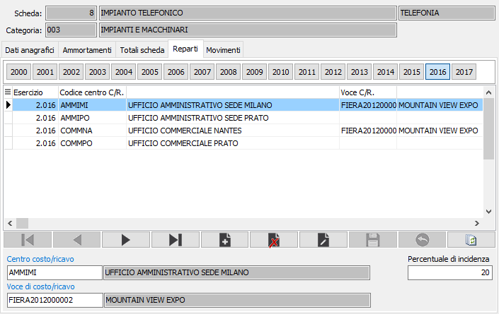

Reparti
La sezione viene visualizzata solo in presenza della procedura di contabilità analitica. Consente di ripartire in percentuale l’utilizzazione di un cespite fra più centri/voci di costo/ricavo ai fini della coerente generazione di movimenti in contabilità analitica. Viene generata in automatico la barra degli esercizi per accedere in modo semplice ai valori degli ultimi venti esercizi; cliccando su di uno dei bottoni si limita la visualizzazione ai soli valori di quell'esercizio.

CENTRO COSTO/RICAVO: codice alfanumerico di 15 caratteri, presente in anagrafica centri di costo/ricavo della contabilità analitica per indicare il centro a cui si riferisce la percentuale di incidenza. Sul campo sono attive le funzioni di ricerca (F9) ed accesso interattivo alla tabella collegata (CTRL+W).
VOCE DI COSTO/RICAVO: eventuale codice della voce di costo/ricavo, presente in anagrafica voci di costo/ricavo per indicare il centro a cui si riferisce la percentuale di incidenza. Sul campo sono attive le funzioni di ricerca (F9) ed accesso interattivo alla tabella collegata (CTRL+W).
PERCENTUALE DI INCIDENZA: campo numerico per indicare la percentuale di incidenza dei movimenti cespiti sul centro/voce di costo/ricavo indicato.